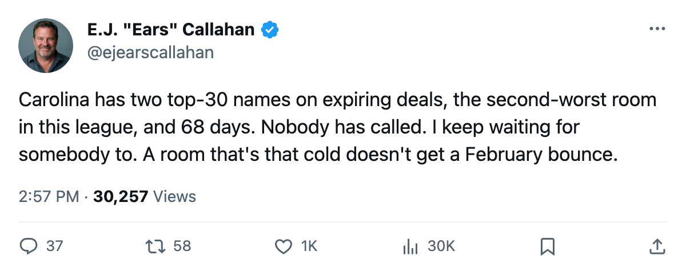
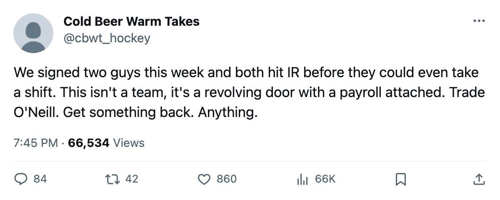

Sellers' Board: Carolina Holds $13.15M in Expiring Top-30 Salaries and 68 Days to Find a Buyer 🔥🔥
Weekes at $6.23M, O'Neill at $6.92M, a room at 87.5, and two fresh signings who hit IR before their first shift.
 E.J. "Ears" CallahanInsider · The Hot Stove
E.J. "Ears" CallahanInsider · The Hot Stove

Carolina's expiring pair stays put or moves within 68 days

Carolina owns 2 of the top 30 contract-year players in this league.  Kevin Weekes88 at 88 overall and $6.23M.
Kevin Weekes88 at 88 overall and $6.23M.  Jeff O'Neill86 at 86 overall and $6.92M. Combined, $13.15M in expiring salary on a 10-17-6 team that pays $1.48M per standings point. The trade deadline is 68 days away.
Jeff O'Neill86 at 86 overall and $6.92M. Combined, $13.15M in expiring salary on a 10-17-6 team that pays $1.48M per standings point. The trade deadline is 68 days away.
Neither man is on the injured list. Neither is on any block yet, according to the record. The question league sources are asking is whether the record will look different in February.
The room knows what it is
 Carolina Hurricanes sits at 87.5 club morale, second-lowest in the league.
Carolina Hurricanes sits at 87.5 club morale, second-lowest in the league.  Radek Dvorak79, 79 overall on $3.20M with 2 years left, is at 72 morale, tied for the lowest mark in the league. The Hurricanes signed Brad DeFauw74 for $160,690 on January 5 and
Radek Dvorak79, 79 overall on $3.20M with 2 years left, is at 72 morale, tied for the lowest mark in the league. The Hurricanes signed Brad DeFauw74 for $160,690 on January 5 and  Danny Markov75 for $540,660 on January 6. Both hit the injured list within a Jan 8-10 onset window. DeFauw is out until March 27 with an elbow. Markov is out until February 8 with a concussion.
Danny Markov75 for $540,660 on January 6. Both hit the injured list within a Jan 8-10 onset window. DeFauw is out until March 27 with an elbow. Markov is out until February 8 with a concussion.
That is the sign-and-injure pattern again, Round 16 if you are counting. Two signings, two days apart, two IR designations, same three-day onset window. Carolina accounts for 2 of the 5 hit-IR cases in the Jan 5-6 filing batch. Detroit took  Rhett Warrener69 the same day; onset between January 8 and January 10, an elbow, back January 16.
Rhett Warrener69 the same day; onset between January 8 and January 10, an elbow, back January 16.  New York Rangers signed
New York Rangers signed  Pavel Bure84 on January 6; concussion, onset between January 8 and January 10, out until February 28.
Pavel Bure84 on January 6; concussion, onset between January 8 and January 10, out until February 28.  Vancouver Canucks took
Vancouver Canucks took  Henrik Sedin69 the same day; knee, same onset window, back March 15.
Henrik Sedin69 the same day; knee, same onset window, back March 15.
 Sandis Ozolinsh87, 87 overall, returns from a groin injury on January 11. He is not on an expiring deal, but he is the best player on the roster who might be available to a contender after that date.
Sandis Ozolinsh87, 87 overall, returns from a groin injury on January 11. He is not on an expiring deal, but he is the best player on the roster who might be available to a contender after that date.
What a buyer gets
| Player | Pos | Age | Salary | Overall | GP | Points | Morale |
|---|---|---|---|---|---|---|---|
| Kevin Weekes | G | 30 | $6.23M | 88 | 33 | 84 | |
| Jeff O'Neill | RW | 29 | $6.92M | 86 | 42 | 45 | 87 |
Weekes has started 33 games at 88 overall. O'Neill has 45 points in 42 games. These are real numbers. The problem is the $6.92M on O'Neill and the $6.23M on a goaltender from a team with 44 points.
A contender picks up Weekes at $6.23M, a top-30 starter on a one-year deal. A contender picks up O'Neill at $6.92M and 45 points through 42 games. That is a short-term starter at a price only the top payroll can absorb without a move of its own. New York Rangers pays $1.55M per point and just signed Bure.  Toronto Maple Leafs is already set behind
Toronto Maple Leafs is already set behind  Roberto Luongo95.
Roberto Luongo95.
The likely takers are the mid-market clubs with space.  Colorado Avalanche has $66.38M committed and 9 picks, but they just absorbed long-term money from Nashville.
Colorado Avalanche has $66.38M committed and 9 picks, but they just absorbed long-term money from Nashville.  Nashville Predators has the league's cheapest per-point rate at $0.93M and 55 points.
Nashville Predators has the league's cheapest per-point rate at $0.93M and 55 points.  Phoenix Coyotes holds 6 picks and pays $1.42M a point.
Phoenix Coyotes holds 6 picks and pays $1.42M a point.
What Carolina gets
Carolina's payroll is $65.29M with 5 picks and 1 first-rounder. Their per-point cost, $1.48M, is 6th-worst in the league. They hold Weekes and O'Neill past a deadline with nothing to show for it and enter July with $13.15M freed. That is the argument for holding. The argument for selling is that the room is at 87.5, that Dvorak is at 72, that they are 10-17-6, and that a pick in June with the room in this state buys less than a player in March.
League sources say no call has been made. That changes when the room hits the deadline cold.
The window opens on March 19, what the calendar has as the trade deadline. That is 68 days. The record, as of tonight, says nobody is calling Carolina.

